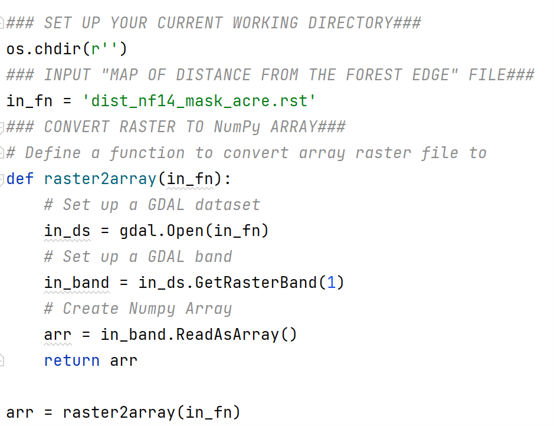
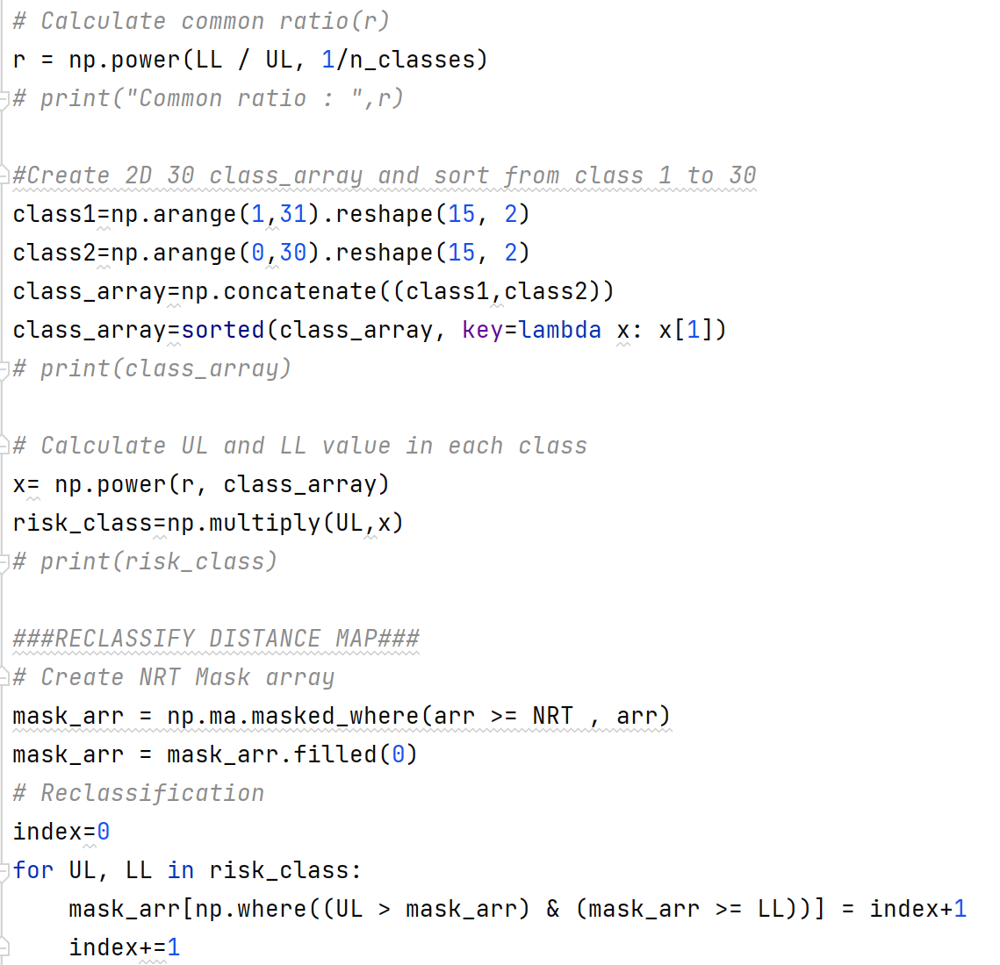
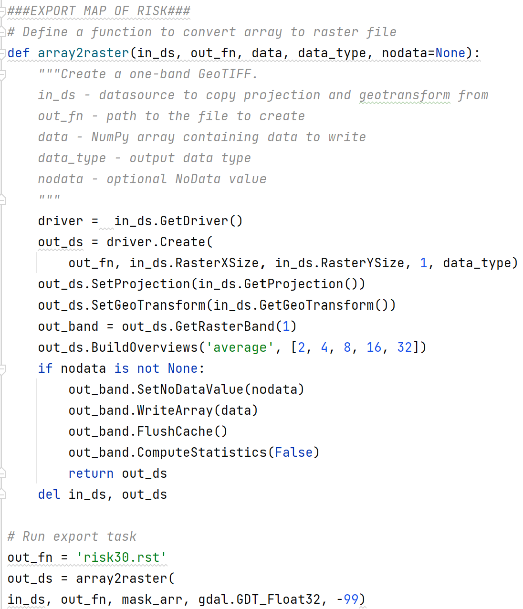
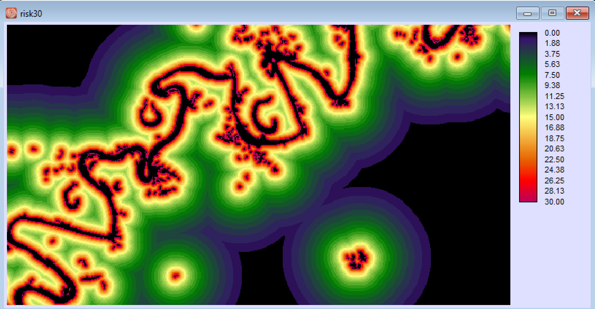

Developing Verra’s Jurisdictional and Nested REDD+ (JNR) Risk Mapping Tool
GIS Programmer internship in Clark Lab

Working as a GIS programmer in Clark Lab, the project is based on a series of case studies that were conducted by the Clark Labs/TerraCarbon team in locations with evident frontier deforestation or mosaic deforestation.
The Risk Mapping tool uses the distance of Forest Cover Benchmark Maps (FCBM) as input imagery. This tool allows users to analyze different formats of raster imagery (e.g.,GEOTIFF, IDRISI Raster). Users can decide the number of classes and the Negligible Risk Threshold (NRT) Distance based on the distance from forest cumulative frequency of deforestation reaches 99.5%.
STEP 1: Convert imagery to GDAL dataset
This article chooses Acre, Brazil with 30 m spatial resolution FCBM imagery during 2014-2020 as an example. Use os.chdir to set up the current working directory. I created a function called raster2array, importing raster imagery to the GDAL dataset and then converting it to Numpy array.
STEP 2: Create the Benchmark Risk Model
For discrete case with ordinal classes, Clark Lab suggested a Geometric Classification has small intervals where the frequency is high progressing smoothly to large intervals where the frequency is lower. First, we need to determine the Negligible Risk Threshold (NRT) Distance. NRT is the distance from forest cumulative frequency of deforestation reaches 99.5%. In Acre, 99.5% of deforestation occurred within a distance of 2460 m.
In Acre, where the resolution of the mapped data is 30m, the lower limit of the highest risk class (LL) = 30 m (the minimum distance possible without being in non-forest) and the upper limit of the lowest risk class (UL) = 2460m (the Negligible Risk Threshold). With the number of classes (n_classes) = 30
I used the Numpy library to reclassify the map. Firstly, Create 2D array of 30 classes LL and UL. Converting to 2D array would be faster than using for loop list by 30%. Secondly, the deforestation rate is pretty lower when the distance is larger than and equal to NRT. I used “np.ma.masked_where” function to create the mask array and fill the 0 value into it. Thirdly, using “np.where” function to reclass the value.
STEP 3: Convert GDAL dataset to imagery
I created a function called array2raster to convert array to raster imagery. Here is a trick to allow the user to input different datatype of raster imagery (e.g.,GEOTIFF, IDRISI Raster), by using GetDriver() instead of calling the driver’s name.
 